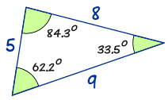
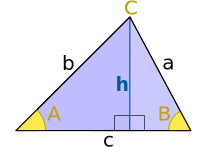
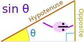
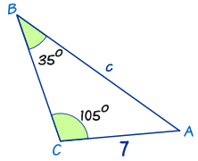
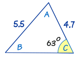
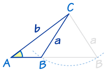
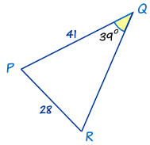
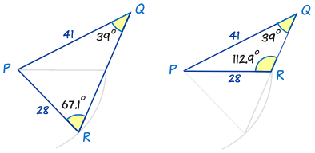
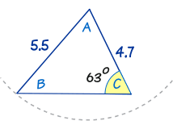

The Law of Sines
The Law of Sines (or Sine Rule) is very useful for solving triangles:
a sin A = b sin B = c sin C
It works for any triangle:
 |
a, b and c are sides. A, B and C are angles. (Side a faces angle A, |
And it says that:
When we divide side a by the sine of angle A
it is equal to side b divided by the sine of angle B,
and also equal to side c divided by the sine of angle C
Sure ... ?
Well, let's do the calculations for a triangle I prepared earlier:
|  |
a sin A = 8 sin(62.2°) = 8 0.885... = 9.04... b sin B = 5 sin(33.5°) = 5 0.552... = 9.06... c sin C = 9 sin(84.3°) = 9 0.995... = 9.04... |
The answers are almost the same!
(They would be exactly the same if we used perfect accuracy).
So now you can see that:
a sin A = b sin B = c sin C
Is This Magic?

Not really, look at this general triangle and imagine it is two right-angled triangles sharing the side h:
The sine of an angle is the opposite divided by the hypotenuse, so:

| sin(A) = h/b | b sin(A) = h | ||
| sin(B) = h/a | a sin(B) = h |
a sin(B) and b sin(A) both equal h, so we get:
a sin(B) = b sin(A)
Which can be rearranged to:
a sin A = b sin B
We can follow similar steps to include c/sin(C)
How Do We Use It?
Let us see an example:
Example: Calculate side "c"

Now we use our algebra skills to rearrange and solve:
Finding an Unknown Angle
In the previous example we found an unknown side ...
... but we can also use the Law of Sines to find an unknown angle.
In this case it is best to turn the fractions upside down (sin A/a instead of a/sin A, etc):
sin A a = sin B b = sin C c
Example: Calculate angle B

Sometimes There Are Two Answers !
There is one very tricky thing we have to look out for:
Two possible answers.
|  |
Imagine we know angle A, and sides a and b. We can swing side a to left or right and come up with two possible results (a small triangle and a much wider triangle) Both answers are right! |
This only happens in the "Two Sides and an Angle not between" case, and even then not always, but we have to watch out for it.
Just think "could I swing that side the other way to also make a correct answer?"
Example: Calculate angle R

The first thing to notice is that this triangle has different labels: PQR instead of ABC. But that's OK. We just use P,Q and R instead of A, B and C in The Law of Sines.
But wait! There's another angle that also has a sine equal to 0.9215...
The calculator won't tell you this but sin(112.9°) is also equal to 0.9215...
So, how do we discover the value 112.9°?
Easy ... take 67.1° away from 180°, like this:
180° − 67.1° = 112.9°
So there are two possible answers for R: 67.1° and 112.9°:

Both are possible! Each one has the 39° angle, and sides of 41 and 28.
So, always check to see whether the alternative answer makes sense.
- ... sometimes it will (like above) and there are two solutions
- ... sometimes it won't (see below) and there is one solution
|  |
We looked at this triangle before. As you can see, you can try swinging the "5.5" line around, but no other solution makes sense. So this has only one solution. |